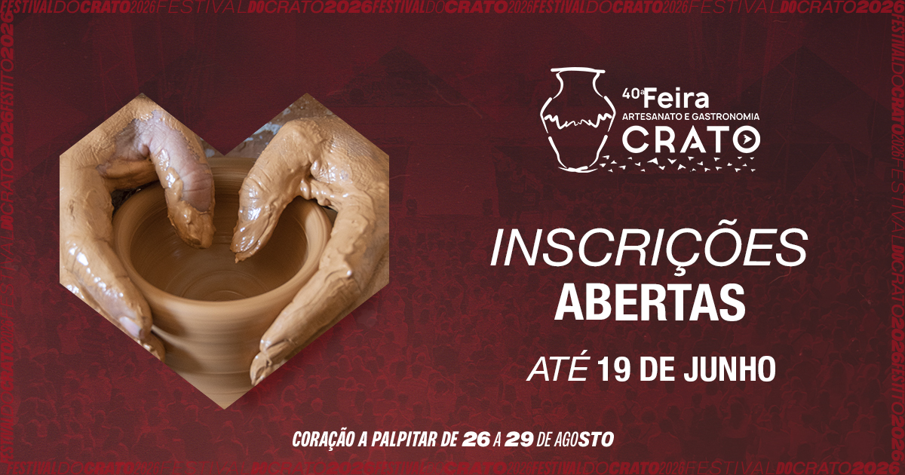

Inscrições para a Feira de Artesanato e Gastronomia 2026 já disponíveis!
As candidaturas para participar na 40.ª FAG estão abertas. Prazo de inscrição: 19 de junho de 2026. Podem candidatar-se expositores individuais ou coletivos, do setor público ou privado.
Ler mais